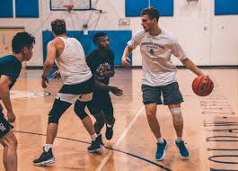
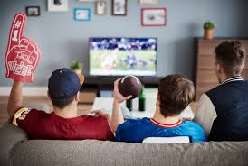

Personal Interests
YoungLife
For four years, I have been a volunteer leader with YoungLife, a christian outreach ministry.
In my time there, I have enjoyed mentoring and walking with highschool students as they celebrate
achievements, as well as lifting them up when experiencing hardships in life.
Exercise
Most days of the week I find time to get a couple hours in at the gym. Whether lifting weights or
playing pickup basketball, I love spending time with my firends and getting in some exercise.
Sports
When im not working or going to the gym, I spend time watching my favorite sports. Football is my
number one choice. When football isn't on, watching the Nuggets or Avalanche play is an excellent passtime.